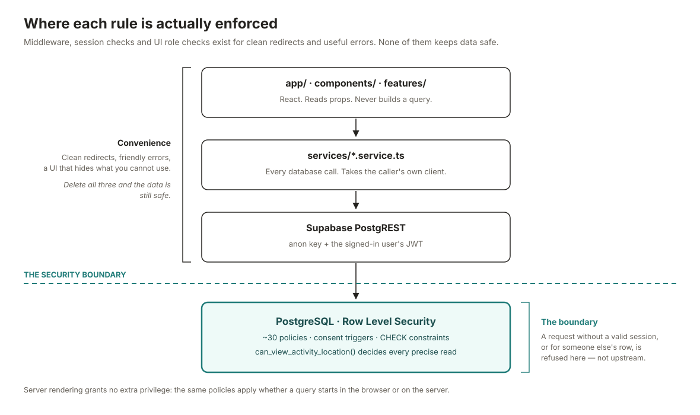
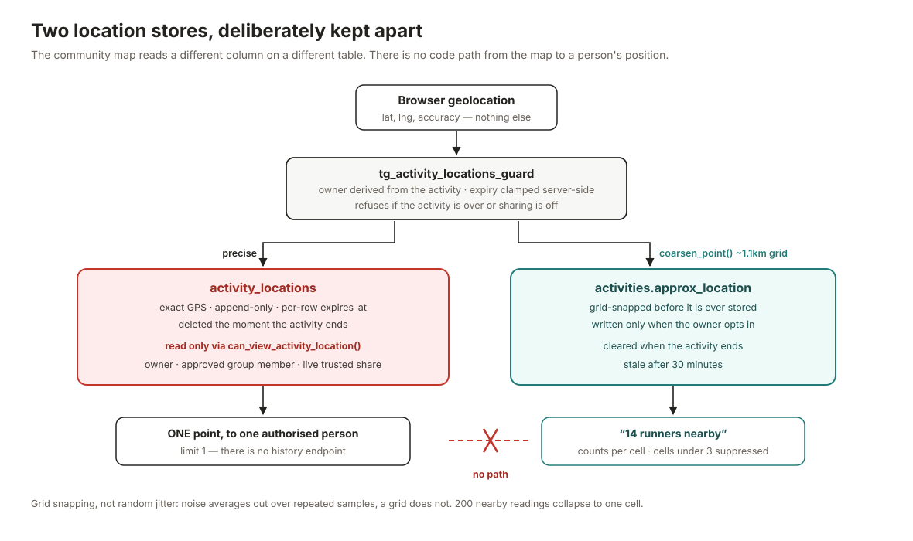
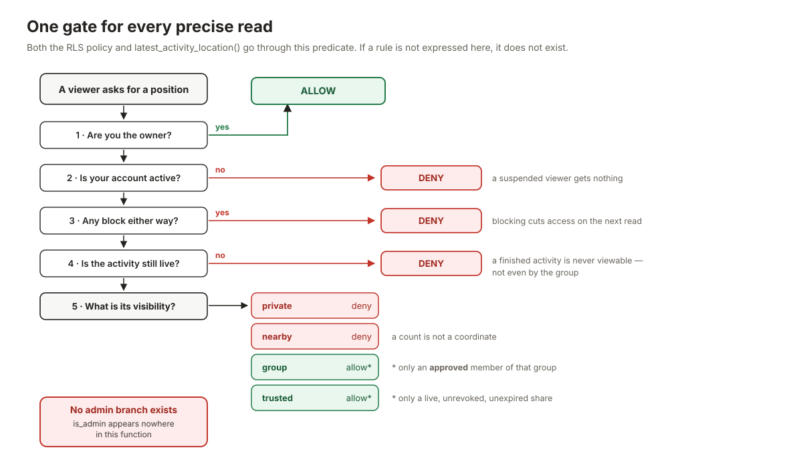

A consent-first community safety and activity PWA.
The product principle. Mwhite SafeCircle is not designed to track people. It lets people voluntarily create temporary safety activities and share their location selectively.
Three consequences run through the schema, the API authorisation, the UI and these documents: location sharing is off by default; a precise coordinate is readable only by someone the owner has authorised, while the activity is live; and precise location is temporary — ending an activity deletes its points outright.
npm install
cp .env.example .env.local # add your Supabase URL + anon key
npx supabase link --project-ref <ref> && npx supabase db push
npm run devMapbox is optional — everything but the map works without a token. Full walkthrough in DEPLOYMENT.md.



is_admin appears nowhere in it.
SECURITY.mdLayers, directory structure, the two request flows that matter, and a table of where each product rule is enforced.
docs/ARCHITECTURE.mdEvery table, column, index, constraint and trigger, with the reasoning behind each.
docs/DATABASE.mdThreat model, RLS policies, admin boundaries, secret handling, and an honest limitations list.
docs/SECURITY.mdData inventory, the seven-link consent chain, retention, and the user controls.
docs/PRIVACY.mdThe heart of the product: lifecycle, coarsening, k-anonymity, and the browser background limit.
docs/LOCATION_MODEL.mdSupabase and Vercel setup, scheduled jobs, monitoring queries, incident response.
docs/DEPLOYMENT.mdnpm run verify # typecheck + lint + 181 tests
npm run test:db # 96 SQL security assertions (needs PostgreSQL + PostGIS)
npm run verify:all # both| Suite | Count | What it proves |
|---|---|---|
tests/db |
96 | Runs the real migrations on PostgreSQL + PostGIS and asserts as an ordinary signed-in user that a stranger, a non-member, an expired share and an administrator all fail to read a precise coordinate. |
tests/security |
102 | Mounting the geolocation or push hook never prompts; no client component reaches a privileged module; the location policy has no admin escape hatch; no alert can carry a location. |
tests/unit |
79 | Validation, grid-snapping maths, error sanitisation, colour contrast, and the product's safety wording. |
public/icons/* are generated placeholders (npm run icons).tel:112.The full list, with reasoning, is at the end of DEPLOYMENT.md.